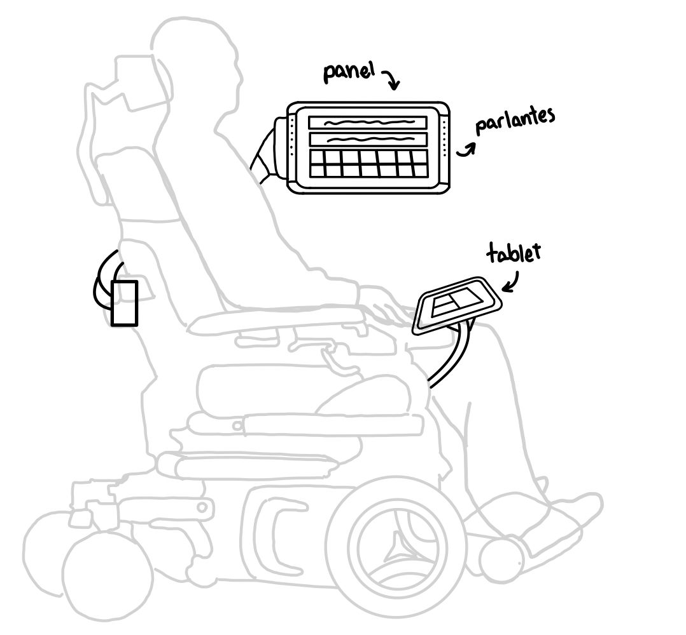

Proyecto preliminar 1
El dispositivo está centrado en ayudar a los pacientes en un estadio temprano e intermedio, ya que presenta un panel ubicado a la izquierda del paciente, el cual posee una serie de imágenes que presentan un significado, como: ayuda, comer, dormir, etc.
También presenta un teclado que es controlado por un sensor de movimiento, una cámara que detecta el movimiento de los ojos como un puntero. De igual forma, tiene otro sensor de movimiento ubicado en un dedo, el cual le servirá como un control.


Proyecto preliminar 2
El dispositivo está compuesto por una interfaz cerebro-computadora, un monitor que contiene un panel de imágenes y frases. Asimismo, este sistema cuenta con una app que transmite el mensaje que desea enviar el usuario a su cuidador
Primero, el usuario deberá ponerse la interfaz que será la encargada de recibir todas las señales, luego el monitor desplegará unas imágenes de frases que el usuario podrá elegir dependiendo el mensaje que quiera transmitir.Tras haberse escogido la imagen,el interfaz enviará señales a su procesador ; el cual posteriormente enviará mediante una app el mensaje del usuario al celular del cuidador.
Proyecto preliminar 3
El paciente utiliza nuevamente la silla eléctrica y una pantalla digital que, en este caso, no se encuentra conectada a ningún sensor, pero sí es táctil. A pesar de que el paciente no pueda realizar movimientos complicados con la mano y el brazo, contamos con que realice pequeños desplazamientos con los dedos y la muñeca.
De esta manera, al mantener la pantalla táctil cerca de la mano diestra del paciente, este pueda seleccionar la respectiva imagen correspondiente a su necesidad y esta señal se transmita al panel que, mediante los parlantes, reproduzca un audio digital o grabado por el paciente anteriormente en un banco de voz.
